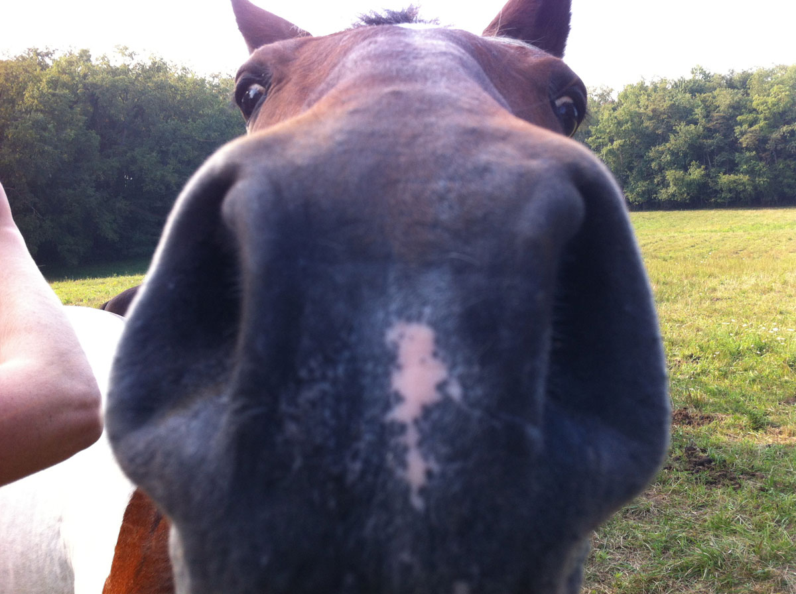

Welcome to the filly fields
7/2/2023 - Ask pinkie
Madame Pinkie, the enigmatic enchantress of divination, has arrived to guide you on your quest for answers! Step into the page on the header and let Madame Pinkie's intuitive prowess illuminate your path. With her keen insight and ancient wisdom, she will unravel the mysteries of the universe, unveiling the secrets that lie hidden within your queries.
7/2/2023 - Wow an update??
No way, an update? yeah so it seems I didn't lose interest in this page after the first day so here comes the first update, two new pages have been added, Doors and MARES (my favorite) im hoping to use that Doors page to link to other pages around Neocities or even link to some secret ones :3c
7/1/2023 - This site is born
After many days i've finally decided to rebuild my page, now even if it looks like a copied template, at least its readable now
I hope this is one of many updates to come in the future, I'll probably use this page mainly as a blog and to shitpost so if thats something you like then feel free to follow this page if you want, but don't expect to see this page updated regularly.
Anyways heres a Horse to celebrate
